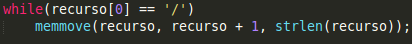

Protocolo implementado
El servidor implementa el protocolo de transferencia de hipertexto (HTTP) este es un nivel de aplicación de protocolos con la ligereza y la velocidad necesaria para distribuir, sistemas de información hipermedia de colaboracion. Este protocolo denominado también como "HTTP / 1.0" describe las caracteristicas que parecen ser aplicado de manera coherente en la mayoria de los clientes HTTP / 1.0 y servidores.
Metodos que implementa el servidor de este protocolo.
- GET: El metodo solicita una representación de un recurso especifico. Las peticiones que usan el metodo GET sólo deben recuperar datos.
- HEAD: El metodo pide una respuesta identica a la de una petición GET, pero sin el cuerpo de la respuesta.
Diseño del servidor
El servidor esta desarrollado en el lenguaje de programacion C. Esta diseñado para implementar los metodos GET y HEAD.
Este esta dividido en dos ejecutables, server y servicio, lo cual sirve para separar las tareas de la implementacion de la interfaz y la conexion del cliente, y la del servicio que brinda el servidor.
server: Se encarga de esperar conexiones. Cuando un cliente se conecta, el servidor clona un proceso hijo para la atencion, este mediante una llamada a la función execv() ejecuta el programa servicio.
Las funciones en server:
- socket: Su funcion es crea un socket.
- bind: Esta funcion asocia un socket a una direccion y un puerto.
- listen: Prepara el socket para aceptar informacion y da el valor maximo de peticiones de conexion que van a ser colocadas en cola.
- accept: Mantiene a un servidor en espera de un pedido de conexion.
- execv: Crea una nueva imagen del proceso.
servicio: El servicio se encarga de recibir peticiones de parte del cliente, este la analiza y se encarga de responder a esta.
Peticion.
La peticion esta dividida en tres campos, el metodo (GET o HEAD), el recurso (archivo alojado en el servidor), La version del protocolo (HTTP/1.0).
Respuesta a una Peticion.
Cuando el servicio recibe una peticion del cliente esta se separa en metodo, recurso y protocolo.
Luego se procede a analizar las partes.
- Primero se verifica que el protocolo sea el HTTP 1.0 ya que este es el que utiliza el servidor.
- Despues de verificar el protocolo, se procede a verificar si el mtodo es uno de los dos metodos que implementa el servidor.
- Se procede a la localización del recurso. Si no se especifica un archivo se intentara enviar un index.html.
Ejemplos:
http://127.0.0.1/
http://127.0.0.1/mi_carpeta/

- Luego se procede a abrir el recurso solicitado para su posterior envio.
- Se obtiene el contenido del recurso.
Despues de obtener el recurso se procede al armado de las cabeceras que se enviarn al cliente.
Llegado a este punto el metodo, la version del protocolo son valido y el recurso se a encontrado, por lo que:
- Se añade el codigo 200 indicando que la peticion es correcta.
- Se indica el tipo de contenido de la respuesta.
- A la función extension se le da el recurso solicitado y esta se encarga de retornar un puntero al comienzo de la extension del archivo por lo general “.”
- La funcion mime recibe la extension del recurso y segun el tipo de este elige el tipo de extension mime (mime es la estándar de mandar contenido a traves de la red, los tipos mime especifican tipos de datos).
- Se indica el tamaño del recurso que se enviar.
Se determina el tipo de metodo.
Si el método es GET se agrega el contenido del recurso solicitado
Se procede a enviar la respuesta al cliente.
Los Mensajes de Errores.
| Codigos |
Mensaje |
Descripcion |
| 400 | Bad Request | La solicitud no puede ser entendida por
el servidor debido a un error de sintaxis. |
| 404 | Not Found | El servidor no ha encontrado nada que
coincida con la URI de solicitud. |
| 501 | Not Implemented | El servidor no soporta la funcionalidad
necesaria para cumplir con la Solicitud. |
| 505 | HTTP Version
Not Supported | El servidor no es compatible, o se niega a
apoyar, la version de protocolo HTTP |
Los errores pueden darse en el siguiente orden:
- 400 Bad Request: Se analiza la primera línea de la petición se extrae el método, el recurso, la versión del protocolo en ese formato. Si eso no se cumple se envía este mensaje de respuesta en una página con formato HTML.
- 505 HTTP Version Not Supported: El servidor está desarrollado para responder solo a las peticiones realizadas por la versión 1.0 del protocolo HTTP, por lo que si la petición se hace con otra versión. Se enviará este mensaje en una página con formato HTML.
- 501 Not Implemented: Lo métodos que el servidor implementa son GET y HEAD, por lo que si se envía cualquier tipo de petición con cualquier otro método se enviará este mensaje en una página con formato HTML.
- 404 Not Found: Luego de verificar si la petición cumpla con uno de los dos métodos, tenga una recurso y la versión del protocolo sea la 1.0 se procede a localizar el recurso. Si este no se encuentra se envía este mensaje en una página con formato HTML.